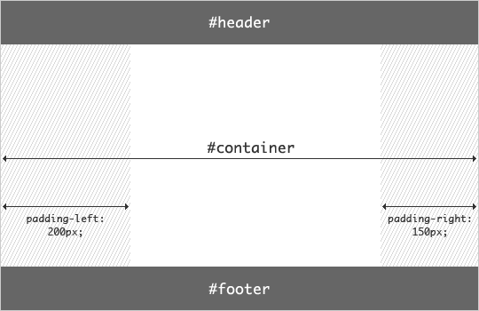

原文连接:https://www.cnblogs.com/lxylhj/p/11348078.html
圣杯布局和双飞翼布局是前端工程师需要日常掌握的重要布局方式。两者的功能相同，都是为了实现一个两侧宽度固定，中间宽度自适应的三栏布局。
主要运用了浮动，定位，负边距。
注释：图片来源圣杯布局原文In Search of the Holy Grail，双飞翼布局图片来源来源于淘宝UED。
圣杯布局
DOM结构
圣杯布局的DOM结构主要由main包裹的center，left，right构成，其中center写在最前面，为了能最先渲染。
CSS样式
在定义样式的时候先为body设置最小宽度，因为两侧存在固定宽度。
这里的main因为没有设置宽度所以继承父元素的宽度，为两边设置内边距给left和right腾出空间。
效果如下：

main，center，left，right代码如下：
为三栏布局都设置浮动，因为center宽度沾满父元素的100%，所以left和right会被挤到下一行
效果如下：

接下来就是如何让left，right分别占据左右两边了
先设置left：
#left {
width: 200px;
margin-left: -100%;
}
效果如下：

这里我们运用了负边距，然后我讲一下负边距带来的影响
1.margin负值对自身的影响
当元素不存在width属性或者（width：auto）的时候，负margin会增加元素的宽度
注意：
margin-top为负值不会增加高度，只会产生向上位移
margin-bottom为负值不会产生位移，会减少自身的高度
2.对文档流的影响
元素如果用了margin-left:-20px;毋庸置疑的自身会向左偏移20px和定位（position：relative）有点不一样的是，在其后面的元素会补位，也就是后面的行内
元素会紧贴在此元素的之后。总结，不脱离文档流不使用float的话，负margin元素是不会破坏页面的文档流。
3.对浮动元素的影响
负margin会改变浮动元素的显示位置，即使我的元素写在DOM的后面，我也能让它显示在最前面。圣杯布局、双飞翼布局都是利用了这一原理。
接着给left设置相对定位。
代码如下：
#left {
width: 200px;
margin-left: -100%;
position: relative;
right: 200px;
background-color: gray;
}效果如下：

#right {
width: 150px;
margin-right: -150px;
background-color: green;
}最后为footer清除浮动 clear：both；